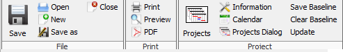
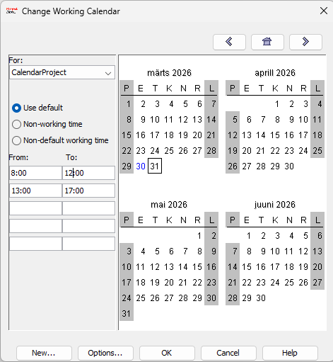
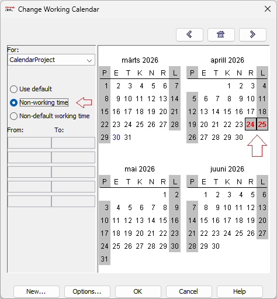
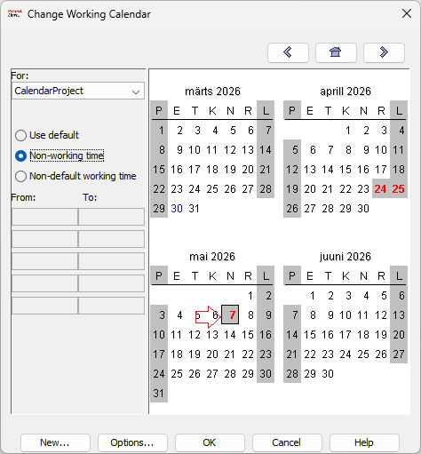

Eesmärk
Selles juhendis näitan, kuidas muuta tööaega ja lisada eripäevi programmis ProjectLibre.
Kalendri avamine
- Ava ProjectLibre
- Mine Project → Project Information
- Vali Change Working Time

Tööaja muutmine
- Vali päev (nt esmaspäev)
- Määra tööaeg (08:00–12:00, 13:00–17:00)

Mitte-tööpäevad
- Vali päev (nt laupäev)
- Määra see mitte-tööpäevaks

Eripäevade lisamine
- Lisa erand (nt puhkus või püha)
- Määra kuupäev

Mõju ajakavale
Kui päev on määratud mitte-tööpäevaks, ei planeeri ProjectLibre sinna ülesandeid. See võib nihutada kogu projekti ajakava.